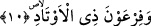

buyurmaktadır.
“Câbû” fiilinin masdarı olan “cevb” kesmek demektir. Ferrâ’nın ifâde ettiğine göre
bu kökün anlamı diyarları gezmek ve katetmek, gömlek kesmek anlamına da gelir.
“Ceyb/cep” ismi de burdan gelmektedir.
“Sahr/kaya” katı ve sert taş demektir.
“Vadi”nin asıl anlamı su yatağı, suyun akıp gittiği yer demektir. Nitekim bu anlamdan
dolayı iki dağ arasındaki aralığa vadi denir. Burada kasdedilen ise Şam tarafından
Medîne-i Şerîfe’nin yakınında bulunan “Vâdi’l-kurâ”dır.
Ebû Nadra der ki: “Rasûlullah (s.a.) Tebük gazvesi sırasında doru bir atın üzerine
binmiş olarak Semûd vadisine geldi. “Hızlı yürüyün. Çünkü lânete uğramış bir vadide
bulunuyorsunuz.” buyurdu.[94]
Âyetin mânâsı ise şöyledir: Dağların kayalarını kestiler. Onların içinde oydukları
kayalardan evler yaptılar. Nitekim Allah Teâlâ: “Dağlardan ustaca evler
yontuyorsunuz.” (eş-Şuarâ, 26/149) buyurmuştur.
Dağları, kayaları ve mermerleri ilk olarak onların (Semûd kavmi) olduğu
söylenmiştir. Onlar tamamı taştan olmak üzere bin yedi yüz şehir kurmuştur.
10. Kazıklar (çadırlar, ordular) sâhibi Firavun’a!
Yâni Mûsâ (a.s.)’nın Firavun’una ne yaptı? Bu firavun el-Velîd b. Mus’ab b. Reyyân
b. Servân Ebü’l-Abbâs el-Kıbtî’dir. Abbâsîlere âid küçük hububat ölçekleri ona nisbet
edilir. “Fir’avn” bir lakaptır. Âyette onun (Hz. Mûsâ’nın Firavun’unun) tek başına
zikredilmesi rablık ve ilahlık iddiâ edecek kadar kibirlenmede ve ululuk taslamada en
önde olmasından dolayıdır.
Fir’avn’a kazıklar sâhibi denilmesinin askerlerinin ve bu askerlerin çadırlarının
çokluğu sebebiyle olduğu daha önce Nebe’ sûresinde geçmişti. Askerler konakladıkları
yerlerde kendilerine çadır kuruyorlar ve tıpkı bugün de çadır kurarken yapıldığı gibi
bunları direklere ve uzun iplere bağlıyorlardı.
Ya da Firavun’a ‘kazıklar sâhibi’ denilmesi Firavun’un kazıklarla işkence yapması
sebebiyledir. Nitekim Keşfü’l-esrâr’da der ki: Firavun onu çekip kazığa bağladı, yâni
onu çarmıha germek sûretiyle işkence ederdi.
İbn Abbas (r.a.)’dan rivâyet olunduğuna göre Firavun’a ‘kazıklar sâhibi’ denilmesinin
sebebi şu olaydır: Firavun’un hazinedarı Harbil’in karısı Firavun’un kızı Heycel’in
saçını tarayıp süslemekle görevliydi. Harbil yüz yıldan beri îmanını gizleyen bir
mü’mindi. Hanımı da aynı şekilde gizlice îman edenlerdendi. Bir gün Harbil’in karısı
Firavun’un kızının başını tararken birden tarak elinden yere düştü. Kadın “Kahrolsun
Allah Teâlâ’yı inkâr eden!” dedi. Bunun üzerine Fir’avn’ın kızı “Senin babamdan başka